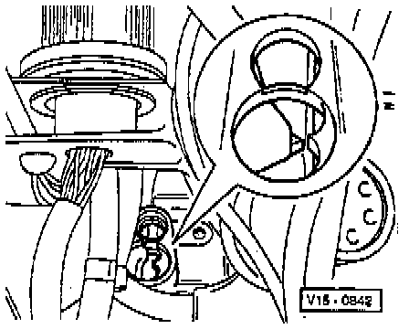
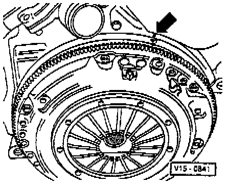

Models With Manual Transmission
1. Set crankshaft to Top Dead Center (TDC) No. 1 Cyl marks by turning crankshaft on the vibration damper securing bolt in engine as follows:
- With engine installed, the mark on the pressure plate (triangular tooth) must align with the reference point cast in outer housing.

- With engine removed the TDC mark milled in the flywheel must align with the reference point cast on flange arrow.
2. On all models, remove cylinder head (valve) cover.

3. The camshaft jig tool No. 3268, or equivalent, must index in both shaft grooves.
NOTE: This condition is only possible every 2nd TDC position.